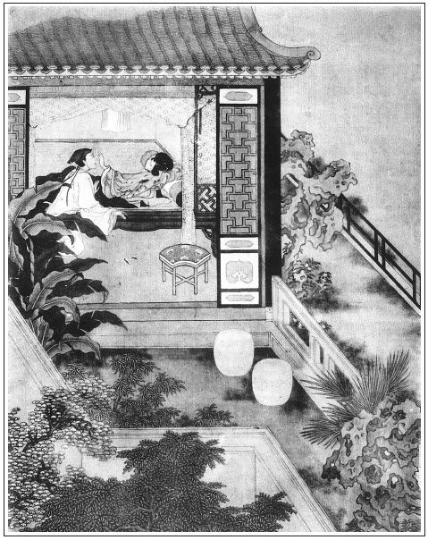

張回此回人云金蓮文字，不知乃過下一十八回文字之脈也。使不弄一得雙，何有春梅下文許多文字？使不有熱心冷面，何有下文玉樓嚴州許多文字？是此回乃春梅別放之由，而玉樓結果之機也，與金蓮全不相干，下文乃正經金蓮收煞文字。
私僕以木香棚露香囊破綻，止為一解著耳，不知已為此回木香棚伏線。荼䕷架，不過金蓮約人之地，不如又為嚴州伏線。葡萄架，本為翡翠軒各分門戶，卻又為調婿得金蓮之金針。是此書大結穴，大照應處。寓言群花固應以此作間架，但用筆入細，人不知耳。用兩詩餘作勾挑，用兩小唱寫淫情，又是一樣小巧章法，特用清脫之筆，以一洗從前之富麗也。
玉樓來時，在金蓮眼中，將簪子一描。玉樓將去，又將簪子在金蓮眼中一描。兩兩相映，妙絕章法。
寫弄一得雙，卻必寫敬濟拿藥材，後文識破姦情，必寫敬濟抱衣往外跑。總是註明西門持家不以禮，而堆藥放衣物於二婦人之樓上為失計，且又註明金、瓶、梅三人之在花園為外室也。
陳敬濟者，敗莖之芰荷也。陳者，舊也，殘也，敗也。敬，莖之別者。濟，芰之別音。蓋言芰荷之敗者也。金蓮者，荷花也，以敬濟而敗，則敬濟實因敗金蓮而寫其人，非為敬濟寫也。即後文寫敬濟之冷鋪飄零，亦是為金蓮而寫，不為敬濟也。蓋言金蓮之禍，不特自為禍，以禍西門，即少有迷之者，亦必至於敗殘凋零，如殘荷敗芰而後已也。豈特其一己之蓮子無成，殘香零落於污泥者哉？至於陳洪，蓋言殘紅。敬濟於此中脫胎，豈非敗莖之芰荷？陳莖芰，乃蓮花之下稍結果處。故金蓮獨與敬濟投，而蕙蓮亦必與敬濟相熟也。
上文安忱送紅白二梅花，又有紅梅花對白梅花之令。每不解，何必定寫兩樣梅花，以映春梅？觀此回，春梅羞得臉上一紅一白，方知前文之妙。蓋已寫一漏洩之春光，於西門生前觀賞之時。惟天之禍福之幾，常倚伏如此。不謂作者之筆，竟與化工等。噫！作者其知幾之人，所謂神之謂也乎！
西門冷處，止用金蓮在廳院一撒溺，已寫得十分滿足。不必更看後文，已令人不能再看，真是異樣神妙之筆。
詞曰：
聞道雙銜鳳帶，不妨單著鮫綃。夜香知為阿誰燒？悵望水沉煙裊。
雲鬢風前綠卷，玉顏想處紅潮，莫交空負可憐宵，月下雙灣步俏。
──右調《西江月》

話說潘金蓮與陳敬濟，自從在廂房裡得手之後，張夾此後，單出手寫之。故自上「售色」二字一氣寫來，便覺章法來脈井井。兩個人嘗著甜頭兒，日逐白日偷寒，黃昏送暖。張夾月娘可謂死矣。或倚肩嘲笑，張夾月娘死矣。或並坐調情，掐打揪撏，通無忌憚。張夾月娘死矣。或有人跟前不得說話，將心事寫了，搓成紙條兒，丟在地下，你有話傳與我，我有話傳與你。張夾月娘死矣。一日，四月天氣，張夾以上一總，此下用數層描寫也。潘金蓮將自己袖的一方銀絲汗巾兒，張夾又自汗巾落脈，與王婆掏出花園買來一線穿卻。裹著一個紗香袋兒，裡面裝一縷頭髮並些松柏兒，封的停當，要與敬濟。不想敬濟不在廂房內，遂打窗眼內投進去。後敬濟進房，看見彌封甚厚，打開卻是汗巾香袋兒，紙上寫一詞，名《寄生草》：
將奴這銀絲帕，並香囊寄與他。張夾此琴童舊物乎？當初結下青絲發。松柏兒要你常牽掛，淚珠兒滴寫相思話。夜深燈照的奴影兒孤，休負了夜深潛等荼䕷架。張夾為拾簪地。
敬濟見詞上約他在荼䕷架下等候，張夾葡萄架立門戶後，此處又換出荼䕷架。夫葡萄架則夏日正炎，是蓮花時候。此雲荼䕷是花事闌珊，春梅飄落，前後章法，一絲不苟。私會佳期。隨即封了一柄湘妃竹金扇兒，亦寫了一詞在上回答他，袖入花園內。不想月娘正在金蓮房中坐著，這敬濟三不知，走進角門就叫：「可意人在家不在？」張夾一語寫出許多日子的敬濟、金蓮，又寫盡許多日的月娘。這金蓮聽見是他語音，恐怕月娘聽見決撒了，連忙掀簾子走出來。看著他擺手兒，佯說：「我道是誰，原來是陳姐夫來尋大姐。大姐剛才在這裡，和他每往花園亭子上摘花兒去了。」繡眉凡入此境，更有許多剛巧剛不巧情景，使人遮遮掩掩，驚驚喜喜。張夾一引卻是敗露之機。這敬濟見有月娘在房裡，就把物事暗暗遞與婦人袖了，他就出去了。月娘便問：「陳姐夫來做甚麼？」張夾寫月娘惡處，直是二十分。蓋自西門死後，一味滿心滿意施為，全無防閒眾妾意，與西門上東京去寫月娘緊守門戶正是反刺。金蓮道：「他來尋大姐，我回他往花園中去了。」以此瞞過月娘。少頃，月娘起身回後邊去了。金蓮向袖中取出拆開，卻是湘妃竹金扇兒一柄，張夾與西門金扇作一遙對章法。上面一種青蒲，半溪流水，有《水仙子》一首詞兒：
紫竹白紗甚逍遙，綠囗青蒲巧製成，金錠銀錢十分妙。美人兒堪用著，遮炎天少把風招。有人處常常袖著，無人處慢慢輕搖，休教那俗人見偷了。繡眉此詞疑是敬濟的筆。張夾不俗者，春梅也。
婦人看見其詞，到於晚夕月上時，早把春梅、秋菊兩個丫頭打發些酒與他吃，關在那邊炕屋睡。張夾放入春梅，不得不頓一頓。又春梅豈如秋菊一類呆人，屢寫其為婦人酒醉關在那邊。見春梅明知而不問，是婦人心腹也。與後「奴豈不知」一語想照。此則用筆暗描，得雙之影矣。然後自在房中，綠窗半啟，絳燭高燒，張夾是夜等人者。收拾床鋪衾枕，薰香澡牝，獨立木香棚下，專等敬濟來赴佳期。西門大姐那夜恰好被月娘請去後邊，聽王姑子宣捲去了，張夾月娘可殺，始終月娘壞事。文旁西門慶家不當出壞事耶？此正天理昭彰時，乃深恨月娘，不知是何脾胃也。只有元宵兒在屋裡。敬濟梯己與了他一方手帕，分付他：「看守房中，我往你五娘那邊下棋去。等大姑娘進來，你快來。」元宵兒應諾了。敬濟得手，走來花園中，只見花篩月影，參差掩映。走到荼䕷架下，張夾葡萄架與荼䕷架，對照章法，故前有琴童。下添一木香棚，作連鎖章法，又出一春梅也。遠望見婦人摘去冠兒，亂挽烏雲，悄悄在木香棚下獨立。這敬濟猛然從荼䕷架下突出，雙手把婦人抱住。把婦人諕了一跳，說：「呸，小短命！猛然外事出來，諕了我一跳。早是我，你摟便將就罷了，若是別人，你也恁膽大摟起來？」敬濟吃得半酣兒，笑道：「早是摟了你，就錯摟了紅娘，也是沒奈何。」繡旁趁勢就插入春梅，妙甚。張夾原評謂此處插入春梅，予謂自酒醉，春梅關在炕屋，已明點春梅心事矣。兩個於是相摟相抱，攜手進入房中。房中熒煌煌掌著燈燭，桌上設著酒饌，一面頂了角門，並肩而坐飲酒。婦人便問：「你來，大姐在那裡？」敬濟道：「大姐後邊聽宣捲去了，我分付下元宵兒，有事來這裡叫，我只說在這裡下棋。」說畢，上歡笑做一處。飲酒多時，常言「風流茶說合，酒是色媒人」，張夾又題二句。不覺竹葉穿心，桃花上臉，一個嘴兒相親，一個腮兒廝搵，罩了燈，上床交接。有《六娘子》張夾可知全寫金蓮，不是寫敬濟。小詞為證：
入門來，奴摟抱在懷。奴把錦被兒伸開，俏冤家頑的十分怪。嗏，將奴腳兒抬。腳兒抬，揉亂了烏雲，䯼髻兒歪。
兩人雲雨才畢，只聽得元宵叫門說：「大姑娘進房中來了。」這敬濟慌的穿衣去了。正是：
狂蜂浪蝶有時見，飛入梨花無處尋。
原來潘金蓮那邊三間樓上，中間供養佛像，兩邊稍間堆放生藥香料。張夾題明見金蓮、春梅皆西門自送。兩個自此以後，情沾肺腑，意密如漆，無日不相會做一處。一日也是合當有事，潘金蓮早辰梳妝打扮，走來樓上觀音菩薩前燒香。張夾總為西門堆藥失計一描也。不想陳敬濟正拿鑰匙上樓，開庫房門拿藥材香料，撞遇在一處。這婦人且不燒香，繡旁金蓮也燒香，大奇。見樓上無人，兩個摟抱著親嘴咂舌，張夾西門有知，夫復誰尤。一個叫「親親五娘」，一個呼「心肝短命」，繡旁此才是金蓮燒的香。因說：「趁無人，咱在這裡幹了罷。」一面解褪衣褲，就在一張春凳上雙鳧飛肩，靈根半入，不勝綢繆。當初沒巧不成話，兩個正幹得好，不防春梅正上樓來，拿盒子取茶葉看見。張夾盒者，合也。所為茶說合也。兩個湊手腳不迭，都吃了一驚。
春梅恐怕羞了他，連忙倒退回身子，張夾所以肯吃酒在那邊炕屋睡也。走下胡梯。慌的敬濟兜小衣不迭，婦人穿上裙子，忙叫春梅：「我的好姐姐，你上來，我和你說話。」那春梅於是走上樓來。金蓮道：「我的好姐姐，你姐夫不是別人，張夾姐姐，姐夫恰好捏攏。我今叫你知道了罷。張夾春梅固早已知道也。俺兩個情孚意合，拆散不開。你千萬休對人說，只放在你心裡。」春梅便說：「好娘，說那裡話。張夾言你尚不知道我也。奴伏侍娘這幾年，豈不知娘心腹，肯對人說！」張夾然則金蓮反夢夢也。婦人道：「你若肯遮蓋俺們，趁你姐夫在這裡，你也過來和你姐夫睡一睡，我方信你。你若不肯，只是不可憐見俺每了。」那春梅把臉羞的一紅一白，張夾所謂紅梅花對白梅花也。方知前文不謬，乃一眼覷此耳。只得依他。卸下湘裙，解開褲帶，仰在凳上，張夾反是春梅自解，寫其素心如畫。盡著這小伙兒受用。繡眉金蓮分惠耶，拖人落水耶？春梅屈從耶，歡喜領受耶？再四思之不得。有這等事！
正是：
明珠兩顆皆無價，可奈檀郎盡得鑽。
有《紅繡鞋》為證：
假認做女婿親厚，往來和丈母歪偷。人情裡包藏鬼胡油。明講做兒女禮，暗結下燕鶯儔，他兩個見今有。張夾不憤語言雖有報，難償此際之辜。
當下盡著敬濟與春梅耍完，大家方才走散。自此以後，潘金蓮便與春梅打成一家，張夾大關目。與這小伙兒暗約偷期，非只一日，只背著秋菊。
六月初一日，潘姥姥老病沒了，有人來說。吳月娘買一張插桌，三牲冥紙，教金蓮坐轎子往門外探喪祭祀，去了一遭回來。到次日，六月初三日，金蓮起來得早，在月娘房裡坐著，說了半日話出來，走在大廳院子裡牆根下，急了溺尿。正撩起裙子，蹲踞溺尿。原來西門慶死了，沒人客來往，等閒大廳儀門只是關閉不開。張夾用閒筆寫出冷局。敬濟在東廂房住，才起來，忽聽見有人在牆根溺的尿刷刷的響，悄悄向窗眼裡張看，卻不想是他，便道：「是那個撒野，在這裡溺尿？撩起衣服，看濺濕了裙子？」這婦人連忙繫上裙子，走到窗下問道：「原來你在屋裡，這咱才起來，好自在。大姐沒在房裡麼？」敬濟道：「在後邊，幾時出來！昨夜三更才睡，大娘後邊拉著我聽宣《紅羅寶卷》，坐到那咱晚，險些兒沒把腰累㿚瘑了，今日白扒不起來。」繡眉月娘強人聽宣卷，亦大是苦事。張夾月娘如此家法，欲人不亂得？金蓮道：「賊牢成的，就休搗謊哄我！昨日我不在家，你幾時在上房內聽宣捲來？丫鬟說你昨日在孟三兒房裡吃飯來。」繡旁又生枝葉，妙。張夾便伏一線，卻是插入之筆。敬濟道：「早是大姐看著，俺每都在上房內，幾時在他屋裡去來！」說著，這小伙兒站在炕上，把那話弄得硬硬的，直豎的一條棍，隔窗眼裡舒過來。繡眉奇想，發千古所未發。婦人一見，笑的要不的，繡旁喜甚。張夾如此寫來，一者見西門冷落之甚，家中寂無人走；而月娘醉夢顛倒如畫。罵道：「怪賊牢拉的短命，猛可舒出你老子頭來，諕了我一跳。你趁早好好抽進去，我好不好拿針刺與你一下子，教你忍痛哩！」敬濟笑道：「你老人家這回兒又不待見他起來，張夾寫其昨夜狂淫。你好歹打發他個好處去，也是你一點陰騭。」繡旁語語趣而諧。婦人罵道：「好個怪牢成久慣的囚根子！」一面向腰裡摸出面青銅小鏡來，放在窗欞上，假做勻臉照鏡，張夾特照桂兒身份。一面用朱唇吞裹吮咂他那話，繡眉此想更奇。情真意切，便有許多急智。吮咂的這小郎君一點靈犀灌頂，滿腔春意融心。正咂在熱鬧處，忽聽得有人走的腳步兒響，這婦人連忙摘下鏡子，走過一邊。敬濟便把那話抽回去。卻不想是來安兒小廝走來，說：「傅大郎前邊請姐夫吃飯哩。」敬濟道：「教你傅大郎且吃著，我梳頭哩，就來。」來安兒回去了。婦人便悄悄向敬濟說：「晚夕你休往那裡去了，在屋裡，我使春梅叫你。好歹等我，有話和你說。」敬濟道：「謹依來命。」婦人說畢，回房去了。敬濟梳洗畢，往鋪中自做買賣。不題。
不一時，天色晚來。那日，月黑星密，天氣十分炎熱。婦人令春梅燒湯熱水，要在房中洗澡，修剪足甲。床上收拾衾枕，趕了蚊子，放下紗帳子，小篆內炷了香。春梅便叫：「娘不知，今日是頭伏，你不要些鳳仙花染指甲？我替你尋些來。」繡旁春梅頗有情興。婦人道：「你那裡尋去？」春梅道：「我直往那邊大院子裡才有張夾瓶兒之院，荒蕪久矣，閒中點出淒涼。，我去拔幾根來。娘教秋菊尋下杵臼，搗下蒜。」婦人附耳低言，悄悄分付春梅：「你就廂房中請你姐夫晚夕來，我和他說話。」春梅去了，這婦人在房中，比及洗了香肌，修了足甲，也有好一回。只見春梅拔了幾顆鳳仙花來，整叫秋菊搗了半日。婦人又與他他幾鍾酒吃，打發他廚下先睡了。婦人燈光下染了十指春蔥，令春梅拿凳子放在天井內，鋪著涼簟衾枕納涼。約有更闌時分，但見朱戶無聲，玉繩低轉，牽牛、織女二星隔在天河兩岸。又忽聞一陣花香，幾點螢火。婦人手拈紈扇，伏枕而待。春梅把角門虛掩。正是：
待月西廂下，迎風戶半開。
隔牆花影動，疑是玉人來。
原來敬濟約定搖木槿花樹為號，張夾處處寫花園，是一部大關目。就知他來了。婦人見花枝搖影，知是他來，便在院內咳嗽接應。他推開門進來，兩個並肩而坐。婦人便問：「你來，房中有誰？」敬濟道：「大姐今日沒出來，我已分付元宵兒在房裡，有事先來叫我。」因問：「秋菊睡了？」婦人道：「已睡熟了。」說畢，相摟相抱，二人就在院內凳上，赤身露體，席上交歡。不勝繾綣。但見：
情興兩和諧，摟定香肩臉搵腮。手撚香乳綿似軟，實奇哉！掀起腳兒脫繡鞋，玉體著郎懷。舌送丁香口便開，倒鳳顛鸞雲雨罷，囑多才：明朝千萬早些來。張夾兩用小唱寫之，又是章法。
兩個雲雨畢，婦人拿出五兩碎銀子來，遞與敬濟說：「門外你潘姥姥死了，棺材已是你爹在日與了他。三日入殮時，你大娘教我去探喪燒紙來了。明日出殯，你大娘不放我去，說你爹熱孝在身，只見出門。這五兩銀子交與你，明早央你蚤去門外發送發送你潘姥姥，打發抬錢，看著下入土內，你來家。就同我去一般。」繡旁親親之詞。張夾敬濟專門假孝子。這敬濟一手接了銀子，說：「這個不打緊。我明日絕早就出門，干畢事，來回你老人家。」說畢，恐大姐進房，老早歸廂房中去了。
一宿晚景休題。到次日，到飯時就來家。金蓮才起來，在房中梳頭。敬濟走來回話，就門外昭化寺裡，拿了兩枝茉莉花兒來婦人戴。張夾又與後張勝提花一映。婦人問：「棺材下了葬了？」敬濟道：「我管何事，不打發他老人家黃金入了櫃，我敢來回話！還剩了二兩六七錢銀子，交付與你妹子收了，盤纏度日。千恩萬謝，多多上覆你。」婦人聽見他娘入土，落下淚來。繡眉至性終在。張夾直照磨鏡一回。便叫春梅：「把花兒浸在盞內，看茶來與你姐夫吃。」不一時，兩盒兒蒸酥，四碟小菜，打發敬濟吃了茶，往前邊去了。由是越發與這小伙兒日親日近。
一日，七月天氣，婦人早辰約下他：「你今日休往那裡去，在房中等著，我往你房裡，和你頑耍。」張夾忽起一波。這敬濟答應了，不料那日被崔本邀了他，和幾個朋友往門外耍子。去了一日，吃的大醉來家，倒在床上就睡著了，不知天高地下。黃昏時分，金蓮驀地到他房中，見他挺在床上，推他推不醒，就知他在那裡吃了酒來。可霎作怪，不想婦人摸到他袖子裡，吊下一根金頭蓮瓣簪兒來，上面鈒著兩溜字兒：「金勒馬嘶芳草地，玉樓人醉杏花天。」繡眉八回中便有此簪，只以為點綴之妙，孰知其伏冷脈至此，始知高文絕無穿鑿之跡。迎亮一看，認的是孟玉樓簪子：張夾不謂此簪又作此一篇文字，金針奇絕。「怎生落在他袖中？想必他也和玉樓有些首尾。不然，他的簪子如何他袖著？怪道這短命，幾次在我面上無情無緒。我若不留幾個字兒與他，只說我沒來。等我寫四句詩在壁上，使他知道。待我見了，慢慢追問他下落。」於是取筆在壁上寫了四句。詩曰：
獨步書齋睡未醒，空勞神女下巫雲。
襄王自是無情緒，辜負朝朝暮暮情。
寫畢，婦人回房去了。卻說敬濟一覺酒醒起來，房中掌上燈，因想起今日婦人來相會，我卻醉了。回頭見壁上寫了四句詩在壁上，墨跡猶新，念了一遍，就知他來到，空回去了。心中懊悔不已。「這咱已是起更時分，大姐、元宵兒都在後邊未出來，我若往他那邊去，角門又關了。」走來木槿花下，搖花枝為號，不聽見裡面動靜，不免踩著太湖石扒過粉牆去。那婦人見他有酒，醉了挺覺，大恨歸房，悶悶在心，就渾衣上床歪睡。不料半夜他扒過牆來，見院內無人，想丫鬟都睡了，悄悄躡足潛蹤走到房門首，見門虛掩，就挨身進來。窗間月色照見床上婦人獨自朝裡歪著，低聲叫「可意人」，數聲不應，說道：「你休怪我，今日崔大哥眾朋友，邀了我往門外五里原莊上射箭張夾西門固在此。耍子了一日，來家就醉了。不知你到，有負你之約，恕罪恕罪。」那婦人也不理他。敬濟見他不理，慌了，一面跪在地下，說了一遍又重複一遍。繡眉金蓮從未受此軟款溫存，敬濟似為西門慶補遺。被婦人反手望臉上撾了一下，罵道：「賊牢拉負心短命，還不悄悄的，丫頭聽見！張夾是說了又說者，卻從聽者口中描出。我知道你有了人，把我不放到心上。你今日端的那去來？」敬濟道：「我本被崔大哥拉了門外射箭去，灌醉了來，就睡著了，失誤你約，你休惱。我看見你留詩在壁上，就知惱了你。」婦人道：「怪搗鬼牢拉的，別要說嘴，與我禁聲！張夾一個要暴白，一個怕人知，寫得如畫。你搗的鬼如泥彈兒圓，我手內放不過。你今日便是崔本叫了你吃酒，醉了來家，你袖子裡這根簪子，卻是那裡的？」敬濟道：「是那日花園中拾的，張夾與琴童葫蘆一對。今兩三日了。」婦人道：「你還㒲神搗鬼，是那花園裡拾的？你再拾一根來，我才信你。繡眉歡會多矣，又疑惱酸醋一番，文情變幻炫人。這簪子是孟三兒那麻淫婦的頭上簪子，繡旁便罵，妙。張夾此句又為嚴州伏線。我認的千真萬真，上面還鈒著他名字，張夾又與西門頭上帶去金蓮家時一照。你還哄我。嗔道前日我不在，他叫你房裡吃飯，原來你和他七個八個。我問你，還不肯認。你不和他兩個有首尾，他的簪子緣何到你手裡？原來把我的事都透露與他，怪道他前日見了我笑，繡旁寫疑心，令人絕倒。原來有你的話在裡頭。張夾有事人，如畫。自今以後，你是你，我是我，綠豆皮兒──請退了。」敬濟聽了，急的賭神發咒，繼之以哭，繡旁妙。道：「我敬濟若與他有一字絲麻皂線，靈的是東嶽城隍，活不到三十歲，生來碗大疔瘡，害三五年黃病，要湯不湯，要水不水。」繡眉好狠咒。張夾此子虛受過者。那婦人終是不信，說道：「你這賊才料，說來的牙疼誓，虧你口內不害磣！」兩個絮聒了一回，見夜深了，不免解卸衣衫，挨身上床躺下。那婦人把身子扭過，倒背著他，使個性兒不理他，由著他姐姐長、姐姐短，只是反手望臉上撾過去。繡眉當此情景，似苦而實樂，然不可為淺人道。諕的敬濟氣也不敢出一口兒來，張夾索性放手一寫。干霍亂了一夜。將天明，敬濟恐怕丫頭起身，依舊越牆而過，往前邊廂房中去了。正是：
三光有影遣誰系？萬事無根只自生。
本章完!